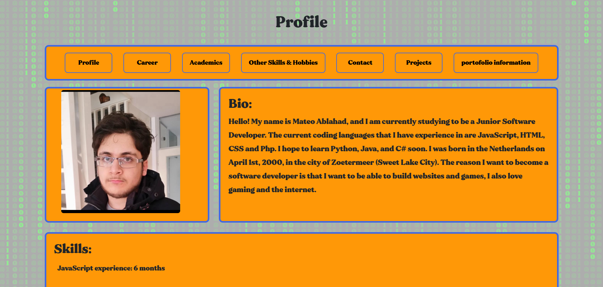
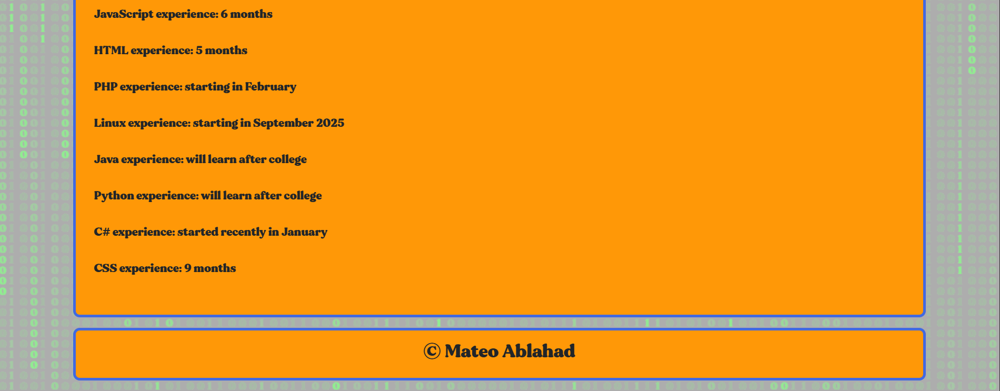
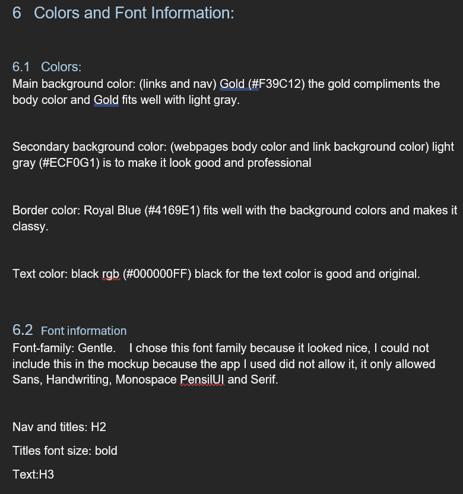
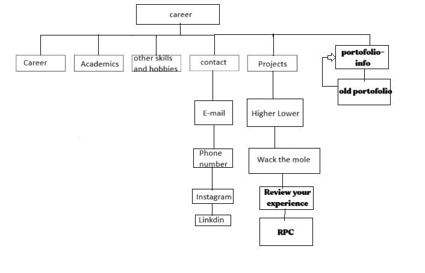

Portfolio Information
Here you can see my description about my new portfolio:
 
Here you can see my color and font schedule:

Here you can see my inspiration for my portfolio:

Here you can see my site map:

Here you can see my description about my new portfolio:
Here you can see my color and font schedule:
Here you can see my inspiration for my portfolio:
Here you can see my site map: